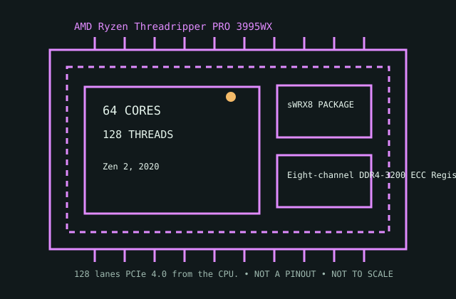

[ IDENTIFIED HEDT / WORKSTATION CPU ]
AMD Ryzen Threadripper PRO 3995WX
Ryzen Threadripper PRO 3000 WX-Series (Zen 2, 2020); 64 cores / 128 threads; sWRX8; 280 W TDP. Static specification and platform compatibility record.

MODEL IDENTIFICATION: AMD Ryzen Threadripper PRO 3995WX. Verify the full marking, suffix, OPN, stepping and OEM status against the physical processor and current board documentation before installation.
Recorded specifications
| Model | AMD Ryzen Threadripper PRO 3995WX |
|---|---|
| Generation / microarchitecture | Ryzen Threadripper PRO 3000 WX-Series (Zen 2, 2020) |
| Cores / threads | 64 cores / 128 threads |
| Base / max boost | 2.7 GHz base / 4.2 GHz max boost |
| Combined cache | 288 MB combined L2 + L3 |
| Socket / package | sWRX8 |
| Default TDP | 280 W |
| Memory | Eight-channel DDR4-3200 ECC Registered DIMM (RDIMM); OEM/workstation platform memory population and validation apply. |
| PCI Express | 128 lanes PCIe 4.0 from the CPU. |
| Platform compatibility | WRX80 / sWRX8 workstation platform with qualified BIOS and OEM support. PRO 3000 WX CPUs use the WRX80 ecosystem; do not substitute X399, TRX40, or WRX90 platform guidance. |
Compatibility and operating notes
- Generation / microarchitecture: Ryzen Threadripper PRO 3000 WX-Series (Zen 2, 2020)
- Cores / threads: 64 cores / 128 threads
- Base / max boost: 2.7 GHz base / 4.2 GHz max boost
- Combined cache: 288 MB combined L2 + L3
- Socket / package: sWRX8
- Default TDP: 280 W
- Memory: Eight-channel DDR4-3200 ECC Registered DIMM (RDIMM); OEM/workstation platform memory population and validation apply.
- PCI Express: 128 lanes PCIe 4.0 from the CPU.
- Platform compatibility: WRX80 / sWRX8 workstation platform with qualified BIOS and OEM support. PRO 3000 WX CPUs use the WRX80 ecosystem; do not substitute X399, TRX40, or WRX90 platform guidance.
- Socket names alone do not establish compatibility. Check exact motherboard model/revision, CPU support list, minimum BIOS, power delivery, cooling, memory QVL, firmware policy and OEM restrictions.
- Published maxima are platform- and configuration-dependent; confirm the applicable manufacturer documentation before building or servicing a system.
Service and archival notes
Record the physical CPU marking, OPN and stepping; host motherboard and revision; firmware; populated DIMMs; cooling; and test conditions. Treat measured behavior as distinct from the published specification.
Do not apply package torque, voltage, memory population or cooler guidance from another Threadripper generation or socket.
AMD manufacturer sources
- AMD product information — AMD Ryzen Threadripper PRO 3995WXAMD product-family page for model identification and published specifications; confirm the full SKU and source revision.
- AMD processor specifications databaseManufacturer specification lookup; search the exact model suffix and compare the archived limits.
- AMD WRX80 platform information — platform cross-checkAMD chipset/platform reference for board-generation context; the motherboard vendor CPU support list remains authoritative for BIOS and board-specific fit.